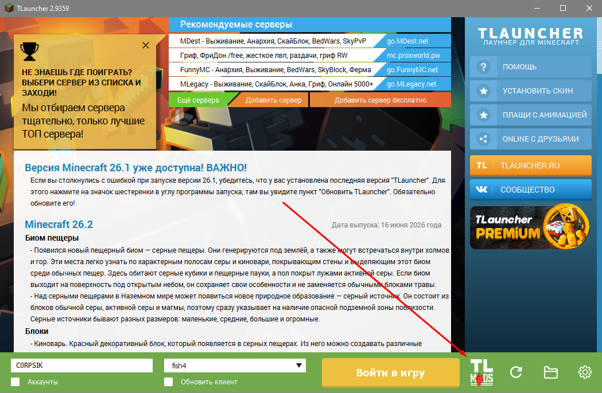
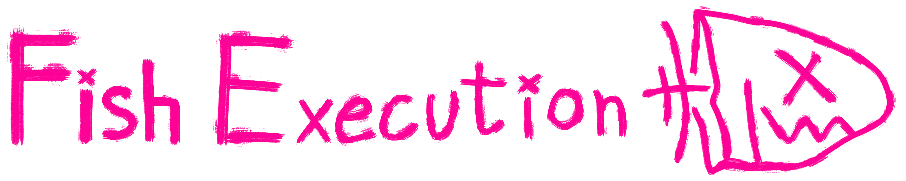
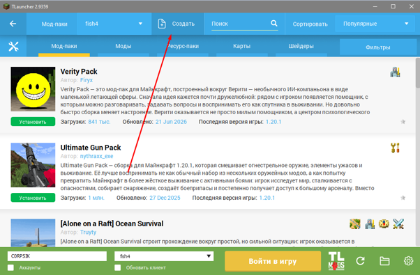
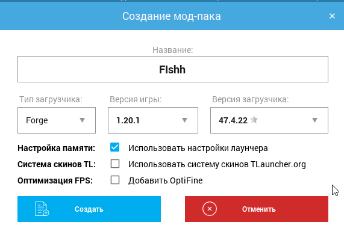
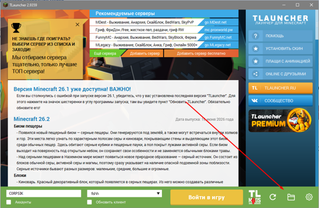
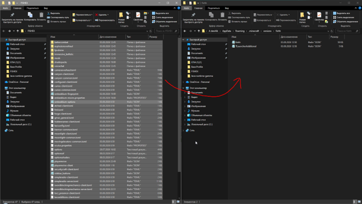

Откройте меню сборок
Кнопка TL Mods в лаунчере


← На главнуюЗдесь показана инструкция для установки сборки на примере TLauncher. Если у вас другой лаунчер, то шаги могут отличаться, но в целом процесс будет похожим. Главное установить верную версию Forge и самого майнкрафта.
Долгая загрузка?
Кнопка TL Mods в лаунчере

Кнопка Создать сверху.

Тип загрузчика: Forge
Версия игры: 1.20.1
Версия загрузчика: 47.4.22

Находим папку к нашей версии по пути:
.minecraft\versions\[имя_версии]
Перейти в .minecraft можно нажав на кнопку с папкой, как на скриншоте.

Переносите файлы сборки скачанные с сайта в вашу созданную.
Можно запускать!

Сетевая игра > добавить > fishex.myserver.best
Выставляйте настройки графики под свои ресурсы
Меняйте настройки управления под свои нужды
К сборке приложены органичные шейдеры
Что-то пошло не так?